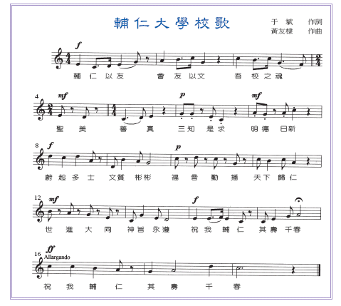

歌詞

校歌闡釋
第一句： 輔仁以友，會友以文 取自論語顏淵篇。表示憑藉學問，集合志同道合的朋友，共同發揚「仁道」精神。這就是輔仁的精神，也是來自北京輔仁的傳統。
第二句： 吾校之魂，聖美善真 為本校在台復校後的校訓，也是台北輔仁秉持的辦學理念。
第三句： 三知是求，明德日新 以「知人、知物、知天」作為本校教育的方法與步驟，更以大學之道，在明明德；商湯《盤銘》茍日新、日日新，勖勉師生。
第四句： 蔚起多士，文質彬彬 表達輔仁十年樹木，百年樹人願景。
第五句： 福音勤播，天下歸仁 以基督信仰的「愛」與中國傳統「仁道」思想緊密結合，作為天主教大學以理性與信仰合作，追求完美的展現。
第六句： 世進大同，神旨永遵 輔仁將秉持＜天主教教育宣言＞與＜天主教大學憲章＞辦學理念，使世界得以逐步進入大同之境。
第七句： 祝我輔仁，其壽千春 希冀天佑輔仁，永續發展，萬古長新。
第八句： 祝我輔仁，其壽千春 希冀天佑輔仁，永續發展，萬古長新。